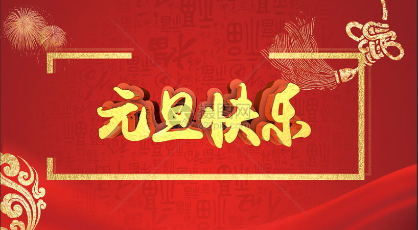
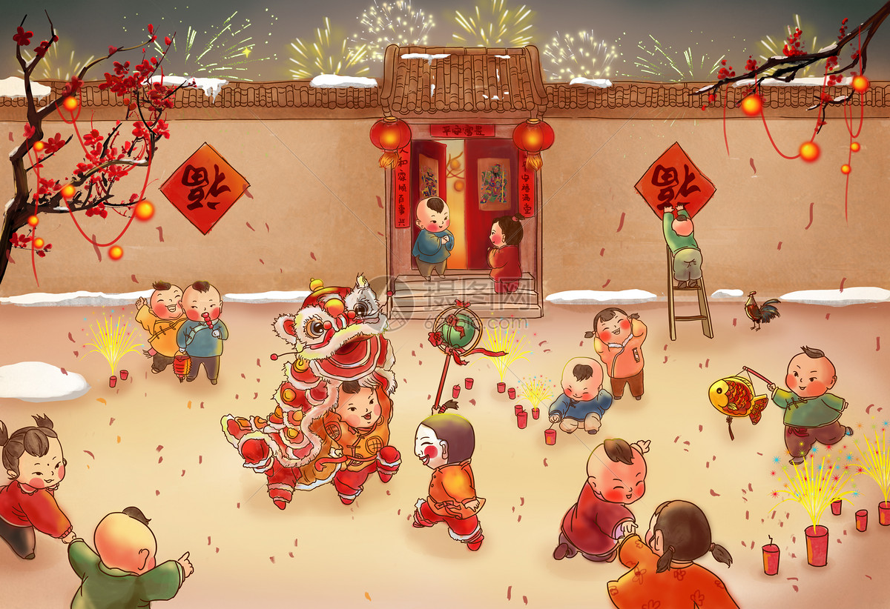
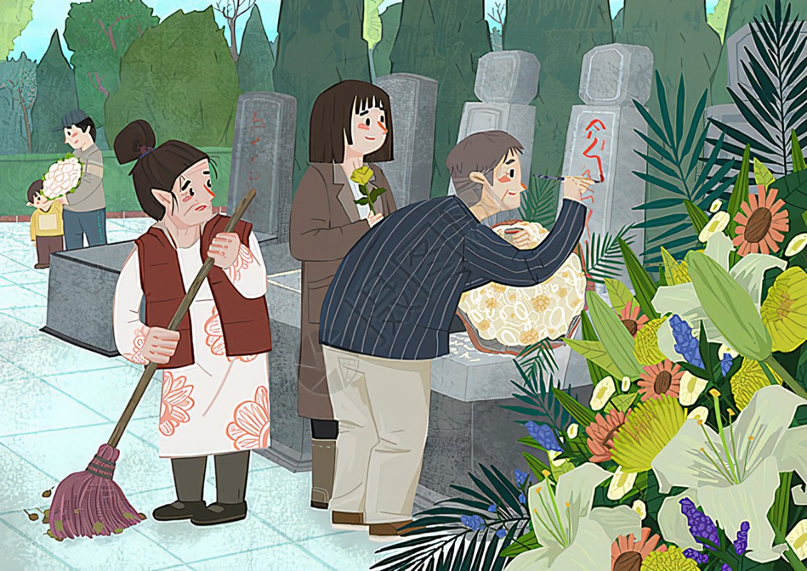
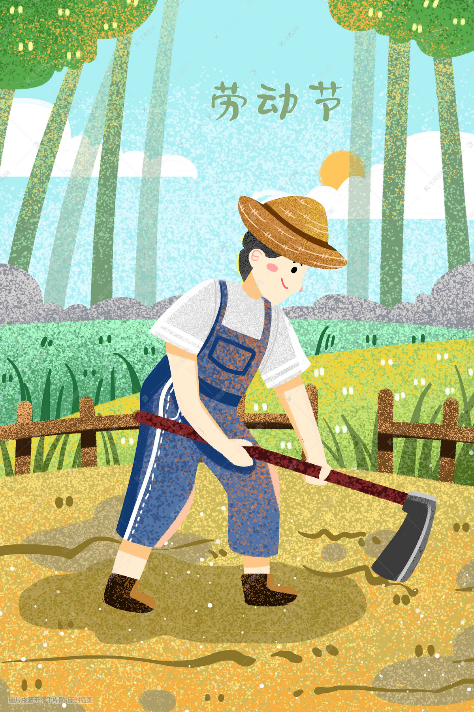
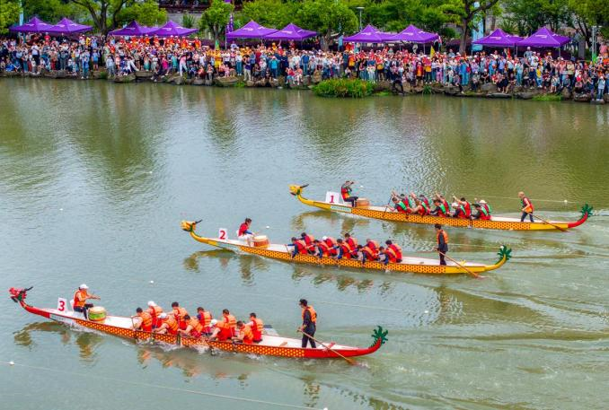
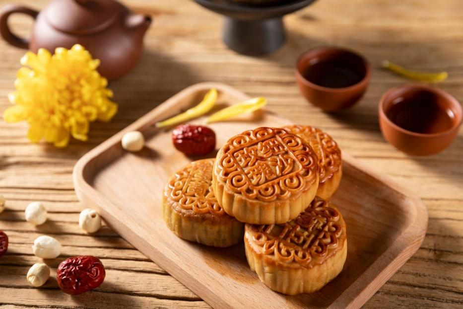
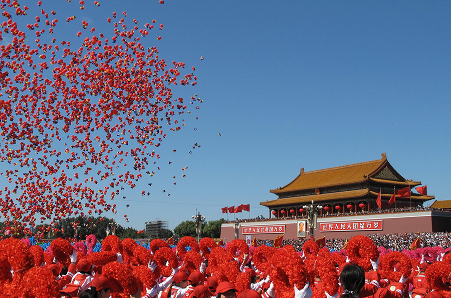

New Year's Day
|

|
There will be a few days off at the beginning of the new year.
|
Spring Festival
|

|
The Spring Festival is one of the most solemn and distinctive traditional festivals in
China.There are many folk customs during the Spring Festival, including drinking Laba porridge,
worshiping the Kitchen God, sweeping dust, pasting Spring Festival couplets, pasting New Year
pictures, pasting blessing characters upside down, staying up late on New Year's Eve, eating
dumplings, giving New Year's money, paying New Year greetings, visiting temple fairs, etc.
|
Qingming Festival
|

|
Qingming Festival, also known as Outing Festival, Xingqing Festival, March Festival, Ancestor
Worship Festival, etc., is held between April 4th and 6th every year. It is a festival for
offering sacrifices to ancestors and sweeping tombs. The Qingming Festival originates from the
ancestral beliefs and spring festival customs in ancient times. It has both natural and
humanistic connotations. It is not only a natural solar term, but also a traditional festival.
|
labor day
|

|
The May Day International Labor Day is of great significance. Workers have fought for their
legitimate rights and interests through struggle and used a tenacious, heroic and unyielding
spirit of struggle. This is a historic progress in human civilization and democracy.
|
Dragon Boat Festival
|

|
The Dragon Boat Festival is one of the four traditional festivals in China. It falls on the
fifth day of the fifth lunar month. It is a folk festival that integrates worshiping gods and
ancestors, praying for blessings and warding off evil spirits, celebrating entertainment and
eating. The main customs of the Dragon Boat Festival include hanging Zhongkui statues, Hiding
Wu, posting Wu leaf talismans, hanging calamus and mugwort, traveling around Baibing, wearing
sachets, preparing sweet wine for animals, racing dragon boats, competing in martial arts,
hitting balls, swinging on swings, applying realgar, drinking realgar wine, calamus wine, and
eating five poison cakes , salted eggs, rice dumplings and seasonal fresh fruits, etc.
|
Mid-Autumn Festival
|

|
The Mid-Autumn Festival originated from the ancestors' worship of celestial phenomena and
evolved from the moon worship on Autumn Eve in ancient times. During its development, it
incorporated various customs such as the emperor's eclipse of the moon, the Autumn Society, moon
appreciation, and the legend of the Moon Palace.
|
National Day
|

|
On October 1, 1949, the Central People's Government of the People's Republic of China was
established，National Day is a characteristic of the country. It emerged with the founding of New
China and has become particularly important. It became a symbol of an independent country and
reflected China's national system and political system.
|